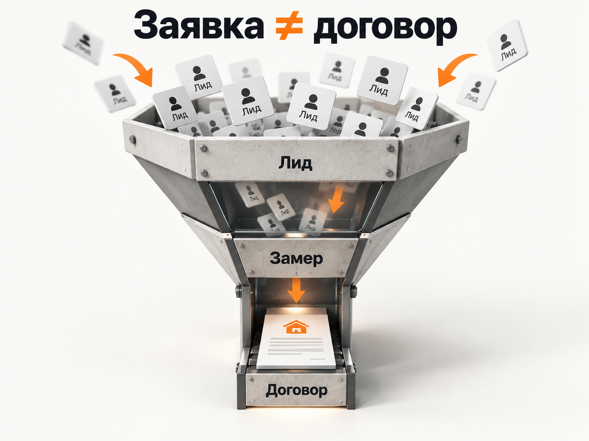

Блог о платном трафике
Продвижение ремонта квартир в 2026 году: инструкция и прогноз
Ремонт квартир - одна из самых тяжёлых ниш для интернет-рекламы.
Проблема не в отсутствии спроса. Люди ремонтируют квартиры, ищут мастеров и готовы обращаться к подрядчикам. Проблема в другом: конкурентов очень много, клиент сравнивает несколько вариантов, чувствителен к цене, решение принимает долго, а обычная заявка ещё очень далека от подписанного договора.
Поэтому рекламировать ремонт квартир по схеме «запустили Директ -> получили лиды -> посчитали CPL» я бы вообще не стал.
Нормальная воронка здесь выглядит так:
реклама -> обращение -> квалифицированный лид -> замер -> смета -> договор
И оценивать рекламу нужно по всей этой цепочке.
Что происходит на рынке ремонта квартир в 2026 году
Со спросом на ремонт проблем нет.
По данным исследования «Авито Услуг» и «Авито Рекламы» среди 10 тыс. жителей России, опубликованного в марте 2026 года, 56% опрошенных считают, что их квартире нужен косметический, капитальный или частичный ремонт. 34% говорят именно о необходимости косметического ремонта, 14% - более масштабного. Средний заявленный бюджет на ремонт составил 493 тыс. рублей.
Но внутри этих цифр находится первая проблема для рекламодателя.
38% опрошенных ориентируются на бюджет до 100 тыс. рублей, ещё 29% хотели бы уложиться в 500 тыс. рублей. Полностью отдать ремонт профессионалам готовы только 17%, ещё 44% собираются часть работ выполнять самостоятельно.
То есть огромный спрос на «ремонт» ещё не означает огромный спрос на комплексный ремонт квартиры под ключ стоимостью миллион рублей и выше.
Это разные рынки.
Дополнительно «Авито» фиксировал рост спроса на ремонтно-отделочные услуги в январе-мае 2026 года примерно на 3,6-4% год к году. Особенно быстро росли отдельные направления: черновая отделка, предчистовая и чистовая отделка.
Спрос есть. Но он сильно раздроблен между мелкими работами, косметикой, отдельными специалистами и полноценными ремонтами под ключ.
Почему реклама ремонта квартир настолько сложная
Очень высокая конкуренция
По горячему запросу человек может выбирать между десятками компаний, небольшими бригадами и частными мастерами.
Причём визуально предложения часто почти не отличаются:
«ремонт под ключ»;
«гарантия»;
«по договору»;
«бесплатный замер»;
«скидка на материалы»;
«дизайн-проект в подарок».
Получается ситуация, когда несколько рекламодателей покупают один и тот же горячий спрос и пытаются продать практически одинаковое предложение.
Просто хорошо настроенного Яндекс Директа здесь недостаточно.
Клиент очень чувствителен к цене
В исследовании о планах россиян на ремонт в 2026 году стоимость работ оказалась главным критерием выбора подрядчика для 73% респондентов. Далее идут гарантия качества - 57%, соблюдение сроков - 43%, портфолио и отзывы - 35%.
Это практически готовое техническое задание для сайта ремонтной компании.
Человеку нужно быстро понять:
сколько примерно стоит работа;
что входит в эту сумму;
какие гарантии он получает;
сколько продлится ремонт;
какие объекты компания уже сделала.
Если вместо этого на первом экране написано «Создаём пространство вашей мечты», реклама будет продаваться значительно тяжелее.
Дешёвая заявка может оказаться бесполезной
Особенно хорошо это видно в РСЯ.
В одном из опубликованных кейсов по Москве и Московской области заявки из РСЯ доходили примерно до 1 000 рублей, но автор отдельно отмечает их более низкое качество. Поиск обходился дороже, зато приводил более качественный спрос.
Типичная ошибка здесь - начать оптимизировать рекламу исключительно на CPL.
Алгоритм действительно может научиться получать много дешёвых форм.
Только отдел продаж потом обнаружит, что там:
мелкий ремонт;
отдельная комната;
«просто узнать цену»;
ремонт когда-нибудь через несколько месяцев;
бюджет, с которым компания не работает;
неподходящий район;
человек вообще хотел мастера на одну работу.
В отчёте маркетинга всё прекрасно. Договоров нет.
Цикл сделки длинный
Ремонт квартиры не покупают как доставку еды.
Человек смотрит сайты, изучает портфолио, получает несколько смет, общается с прорабами, проверяет отзывы и только потом выбирает подрядчика.
Поэтому сравнивать «заявки марта» с «договорами марта» тоже некорректно. Часть мартовских договоров могла прийти из январских и февральских обращений.
В длинной воронке правильнее смотреть когорты лидов и отслеживать судьбу каждого обращения через CRM.

Какие результаты реально встречаются в свежих кейсах
Надёжного исследования, из которого можно было бы вывести «средний CPL ремонта квартир по России», я не нашёл. Поэтому такую цифру придумывать не буду.
Но свежие опубликованные кейсы позволяют увидеть порядок значений.
| Проект | Период и регион | Расход | Лиды | CPL | Продажи |
|---|---|---|---|---|---|
| Ремонт квартир | Ростов-на-Дону, март 2026 | 57 629 ₽ | 36 | 1 601 ₽ | не указаны |
| Ремонт квартир | Москва и МО, апрель-июль 2025 | 793 599 ₽ | 312 | 2 543 ₽ | не указаны |
| Ремонт и отделка | Подмосковье, ноябрь 2025 | 108 000 ₽ | 117 | 923 ₽ | 6 объектов |
| Ремонт квартир | опубликован в июне 2026 | 50 000 ₽ | 68 | 735 ₽ | 6 договоров |
В ростовском кейсе за март 2026 года было 1 025 кликов, 36 заявок и расход 57 629 рублей. Конверсия сайта составила 3,51%, CPL - 1 600,81 рубля. Если пересчитать исходные данные, средний клик получился примерно по 56 рублей.
В Москве и Московской области другой проект за четыре месяца потратил 793 599 рублей и получил 312 заявок. CPL составил 2 543 рубля. При этом автор кейса прямо разделяет каналы: более дешёвые заявки давала РСЯ, более качественные - Поиск.
Особенно интересен кейс из Подмосковья, потому что там опубликованы не только заявки, но и реальные объекты. В ноябре 2025 года при расходе 108 тыс. рублей получили 117 обращений и шесть заказов. CPL составил 923 рубля. Если просто разделить рекламный расход на шесть заказов, рекламная стоимость одного объекта составляет около 18 тыс. рублей.
Но здесь есть оговорка: из-за длинного цикла сделки нельзя гарантировать, что все шесть ноябрьских договоров появились именно из 117 ноябрьских заявок.
Есть и очень сильный опубликованный кейс: 50 тыс. рублей бюджета, 68 обращений, 27 замеров и шесть договоров общей стоимостью 3,7 млн рублей. Получается около 735 рублей за обращение, примерно 40% перехода из лида в замер, 22% из замера в договор и 8,8% из первоначального обращения в договор. Рекламная стоимость договора - около 8,3 тыс. рублей.
Я бы воспринимал такой результат как сильный кейс, а не как норму рынка.
Разница между 735 и 2 543 рубля за заявку уже превышает три раза. А если начать сравнивать не заявки, а квалифицированные лиды и договоры, разброс будет ещё больше.
Какой CPL закладывать в прогноз
Для первоначального медиаплана я бы не рассчитывал ремонт квартир по обещанию «лиды от 700 рублей».
Более безопасный рабочий ориентир для первого расчёта:
| Показатель | Ориентир для прогноза |
|---|---|
| Сырая заявка | 1 500-4 000 ₽ |
| Конверсия заявки в договор | 4-8% |
| Рекламная стоимость договора | примерно 19 000-100 000 ₽ |
Это не средние показатели рынка.
Это расчётный коридор, который я бы использовал до получения собственной статистики проекта с учётом опубликованных кейсов выше.
В хорошем региональном проекте результат может оказаться заметно лучше. В Москве, при слабом сайте, плохом оффере или низком качестве лидов - хуже.
Именно поэтому прогноз ремонта квартир нужно считать от договора назад, а не от клика вперёд.
Сколько рекламного бюджета нужно на пять договоров
Покажу на трёх сценариях.
Сильный сценарий
CPL - 1 500 ₽.
Конверсия из заявки в договор - 8%.
Для пяти договоров потребуется примерно:
5 / 0,08 = 63 заявки.
63 × 1 500 = 94 500 ₽.
Стоимость одного договора по рекламным расходам - около 18 900 ₽.
Рабочий сценарий
CPL - 2 500 ₽.
Конверсия заявки в договор - 6%.
5 / 0,06 = примерно 84 заявки.
84 × 2 500 = 210 000 ₽.
Стоимость договора - около 42 000 ₽.
Осторожный сценарий
CPL - 4 000 ₽.
Конверсия - 4%.
5 / 0,04 = 125 заявок.
125 × 4 000 = 500 000 ₽.
Стоимость договора - 100 000 ₽.
Разница огромная.
Для одного и того же плана в пять новых объектов рекламный бюджет может находиться примерно между 95 и 500 тыс. рублей.
Вот почему фраза конкурента «мы получаем заявки по 1 000 рублей» практически ничего не говорит об экономике бизнеса.
Подробнее сам принцип такого расчёта я разбирал в материале «Прогноз бюджета Яндекс Директ».
Сколько можно платить за договор
Здесь уже нужна экономика конкретной ремонтной компании.
Предположим, средний договор - 700 тыс. рублей.
Но рекламодателя должна интересовать не выручка 700 тыс., а валовая прибыль, которая останется после рабочих, материалов, логистики, прораба, переделок и остальных расходов.
Если компания зарабатывает с такого объекта условные 150 тыс. рублей, привлечение клиента за 30-40 тыс. может быть нормальным.
Если после всех расходов остаётся 50 тыс. рублей, тот же CAC практически съедает прибыль.
Поэтому готового ответа «реклама ремонта квартир окупается при CPL X» не существует.
Сначала определяется допустимая стоимость договора.
Потом из неё рассчитывается допустимая стоимость квалифицированного лида и обычной заявки.
Какой сайт нужен для рекламы ремонта квартир
В этой нише сайт влияет на результат рекламы очень сильно.
В свежем ростовском кейсе конверсия страницы менялась примерно от 1,44% до 5% после работы над посадочной и рекламой.
На странице я бы обязательно показал:
- Какие именно ремонты делает компания.
- Географию работы.
- Реальные фотографии готовых объектов.
- Площадь каждого объекта.
- Что было сделано.
- Срок выполнения.
- Реальную или хотя бы ориентировочную стоимость.
- Из чего формируется цена.
- Этапы работы.
- Гарантию и договор.
- Кто отвечает за объект.
- Форму расчёта или вызова замерщика.
Портфолио уровня «красивая кухня + красивая ванная» уже слабое.
Намного убедительнее:
67 м², новостройка, ремонт под ключ, 4,5 месяца, стоимость работ 1,3 млн ₽.
Человек сразу понимает порядок денег и может сопоставить объект со своей квартирой.
Такой подход ещё и частично фильтрует дешёвые обращения.
Нужно ли указывать цену
Я бы указывал хотя бы нижнюю границу.
Например:
«Комплексный ремонт от 25 000 ₽/м² за работы».
Или другую реальную для конкретной компании цифру.
Да, часть людей после этого не оставит заявку.
И это хорошо, если компания всё равно не готова работать с их бюджетом.
В ремонте квартир задача сайта не получить максимальную конверсию любой ценой. Задача - получить человека, который потенциально способен стать нормальным договором.
Как запускать Яндекс Директ на ремонт квартир
Начать с максимально сформированного спроса
Я бы в первую очередь тестировал Поиск.
Например:
ремонт квартир под ключ;
ремонт квартиры в новостройке;
капитальный ремонт квартиры;
отделка квартиры под ключ;
ремонт вторичной квартиры;
ремонт квартиры + район или город;
стоимость ремонта квартиры под ключ.
При этом «ремонт» как самостоятельная фраза слишком широкая.
В справке Яндекса даже используется именно этот пример: по общему слову «ремонт» сервис показывает огромный массив спроса, куда попадают автомобили, телефоны и другие совершенно посторонние направления. Для рекламодателя ремонта квартир Яндекс рекомендует уточнять запрос.
Разделить разные продукты
Я бы не смешивал в одну связку:
ремонт квартиры под ключ;
косметический ремонт;
ремонт ванной;
ремонт кухни;
отдельные отделочные работы;
дизайнерский ремонт;
ремонт домов.
У них разный чек, разный клиент и разная экономика.
Человек с запросом «поклеить обои в комнате» и владелец 80-метровой квартиры без отделки формально находятся в одной теме ремонта, но для бизнеса это совершенно разные лиды.
Постоянно контролировать реальные поисковые запросы
Одного первоначального сбора семантики недостаточно.
Современный Директ может показываться и по семантически близким формулировкам. Яндекс прямо рекомендует анализировать отчёт «Поисковые запросы», добавлять полезные запросы и исключать нерелевантные через минус-фразы.
В ремонте это критично.
Одно слово может полностью изменить намерение пользователя:
своими руками;
вакансия;
работа;
обучение;
материалы;
фото;
идеи;
дизайн;
бесплатно;
как сделать.
Но минусовать всё автоматически тоже нельзя. Например, запрос со словом «цена» может быть очень коммерческим.
РСЯ тестировать отдельно
РСЯ способна давать дешёвые заявки, что видно и по опубликованным кейсам.
Но дешёвая форма из РСЯ и человек, который сам ввёл «заказать ремонт квартиры под ключ», находятся на разных уровнях готовности.
Поэтому Поиск и РСЯ я бы анализировал отдельно минимум по:
CPL;
доле квалифицированных обращений;
стоимости замера;
стоимости договора.
Подробнее различия каналов разобраны в материале «Поиск или РСЯ в Яндекс Директе».
Главная настройка Директа находится вообще не в Директе
Если алгоритм оптимизируется на обычную отправку формы, он учится находить людей, которые отправляют формы.
Не тех, кто подписывает договор.
В ремонте квартир это принципиальная разница.
Поэтому после накопления данных я бы возвращал из CRM в Метрику более глубокие события:
квалифицированный лид -> замер -> договор
Яндекс Метрика позволяет загружать офлайн-конверсии и использовать подтверждённые действия, включая подписанные договоры, для аналитики и оптимизации Директа. Сам Яндекс отдельно рекомендует передавать «хорошие» заявки, поскольку далеко не каждая заполненная форма приводит к продаже.
Подробная инструкция есть в моей статье «Офлайн-конверсии в Яндекс Директ и Метрике».
Это одна из самых полезных вещей, которую можно сделать в такой нише.
Иначе реклама легко начинает оптимизироваться на дешёвый мусор.
Звонки тоже нужно учитывать
Ремонт - услуга, по которой люди часто звонят.
Если формы учитываются, а звонки нет, Директ видит только часть нормальных лидов.
Поэтому нужен коллтрекинг и квалификация звонков.
Сам звонок ещё не обязательно должен становиться главной целью оптимизации. Лучше передавать отдельно целевые звонки после того, как понятно, что человеку действительно нужен подходящий компании ремонт.
Подробнее: «Коллтрекинг для Яндекс Директа».
Авито для ремонта я бы тестировал обязательно
В ремонте Авито нельзя считать каким-то второстепенным каналом.
По исследованию марта 2026 года реклама на сайтах объявлений и маркетплейсах влияет на выбор исполнителя у 35% опрошенных. Для поисковой рекламы показатель составил 21%. В целом 60% опрошенных так или иначе используют интернет-рекламу при выборе мастеров.
Это не означает, что Авито автоматически лучше Яндекс Директа.
Но аудитория там очевидно есть.
Причём Авито хорошо подходит для дробления предложения:
ремонт новостроек;
капитальный ремонт;
косметический ремонт;
ванная;
электрика;
сантехника;
отделочные работы.
У каждой услуги можно отдельно оценивать стоимость обращения и качество клиента.
SEO тоже имеет смысл
У ремонта огромный информационный слой спроса.
Люди заранее ищут:
сколько стоит ремонт квартиры;
сколько длится ремонт;
этапы ремонта новостройки;
стоимость ремонта за квадратный метр;
как выбрать ремонтную бригаду;
сколько стоит капитальный ремонт;
ремонт квартиры с материалами или без.
Такой пользователь пока может быть не готов вызвать замерщика, но уже находится внутри будущей воронки.
Поэтому хороший сайт ремонтной компании я бы развивал одновременно в двух направлениях:
коммерческие страницы под конкретные услуги;
информационные статьи под вопросы потенциальных заказчиков.
SEO не заменяет Директ на старте, зато постепенно снижает зависимость бизнеса от рекламного аукциона.
Яндекс Карты
Для локального бизнеса Карты тоже имеют смысл.
Особенно если у компании есть офис или нормальная карточка организации, реальные фотографии, рейтинг и отзывы.
Перед тем как отдать компании несколько сотен тысяч или миллионов рублей, люди почти неизбежно пытаются проверить её за пределами рекламного лендинга.
Поэтому сайт, Карты, отзывы и другие упоминания компании работают вместе.
Какой оффер использовать
Я бы не пытался выиграть конкуренцию очередной формулировкой:
«Качественный ремонт под ключ с гарантией».
Это практически обязательные свойства услуги.
Гораздо полезнее давать конкретику:
«Ремонт новостроек от X ₽/м²»;
«Фиксируем стоимость работ в договоре»;
«Покажем реальные квартиры, которые сейчас находятся в работе»;
«Смета после замера с разбивкой по этапам»;
«Ремонт квартир от 60 м²»;
«Работаем только с комплексным ремонтом».
Последние варианты могут снизить количество заявок.
Но в этой нише снижение количества заявок иногда является улучшением рекламы.
Как оценивать качество лида
Я бы зафиксировал критерии заранее.
Например, квалифицированный лид:
находится в рабочей географии;
нуждается именно в комплексном ремонте;
площадь квартиры подходит компании;
бюджет соответствует минимальному;
срок начала работ приемлем;
человек готов обсуждать замер или смету.
После этого отчёт становится намного полезнее:
| Источник | Лиды | Квалифицированные | Замеры | Договоры |
|---|---|---|---|---|
| Поиск | 30 | 18 | 10 | 3 |
| РСЯ | 50 | 12 | 6 | 1 |
| Авито | 40 | 20 | 11 | 3 |
Сырых заявок больше всего дала бы РСЯ.
Но по реальным потенциальным клиентам она оказалась бы самым слабым каналом.
Именно поэтому обычный CPL часто вводит владельца ремонтной компании в заблуждение.
Подробнее о самой логике расчёта есть в материале «Конверсия лидов в продажи».
Когда я бы вообще не запускал рекламу ремонта квартир
Есть ситуации, когда проблема находится раньше рекламного кабинета.
Я бы сначала исправлял бизнес и сайт, если:
нет нормального портфолио;
невозможно назвать даже ориентировочную стоимость;
непонятно, какие ремонты выгодны компании;
нет минимального чека;
бригады уже полностью загружены;
заявки обрабатываются через несколько часов;
никто не фиксирует причины отказов;
отсутствует CRM или хотя бы нормальный учёт лидов;
бизнес не знает маржу с объекта;
все обращения автоматически считаются качественными.
В такой ситуации Директ просто быстрее покажет уже существующие проблемы.
Пошаговая схема продвижения ремонта квартир
Я бы запускал продвижение следующим образом.
- Определить наиболее прибыльный тип ремонта.
- Рассчитать допустимую стоимость договора.
- Определить критерии квалифицированного лида.
- Переделать посадочную под конкретный сегмент.
- Добавить реальные объекты с ценой, площадью и сроками.
- Настроить Метрику, формы, звонки и CRM.
- Запустить горячий поисковый спрос.
- Проверять реальные поисковые запросы и качество лидов.
- Отдельно протестировать РСЯ.
- Отдельно протестировать Авито.
- Передавать квалификацию, замеры и договоры обратно в аналитику.
- Перераспределять бюджет по стоимости договора, а не по минимальному CPL.
- Параллельно развивать SEO и репутацию компании.
Итоговый прогноз
В 2026 году ремонт квартир остаётся большим и живым рынком. Спрос не исчез: более половины опрошенных россиян считают, что их жилью требуется тот или иной ремонт, а интернет-реклама заметно влияет на выбор исполнителя.
Но именно поэтому конкуренция высокая.
По свежим кейсам заявки из Яндекс Директа встречаются примерно от 700-900 до 2 500 рублей и выше. Разброс огромный, а стоимость заявки ещё ничего не говорит о прибыли.
Для первого осторожного расчёта я бы закладывал:
CPL - 1 500-4 000 ₽.
Конверсия сырой заявки в договор - 4-8%.
Рекламная стоимость договора - примерно 19 000-100 000 ₽.
При рабочем сценарии CPL 2 500 рублей и конверсии в договор 6% для получения пяти новых объектов понадобится примерно 84 обращения и около 210 тыс. рублей рекламного бюджета.
Но главная метрика в этой нише всё равно не CPL.
Она выглядит так:
сколько рекламных денег потребовалось, чтобы получить один прибыльный договор на ремонт.
Если реклама приводит дешёвые формы, но до замера никто не доходит, хорошего результата нет.
Если заявка стоит дороже рынка, но превращается в крупный прибыльный объект, высокая стоимость лида сама по себе проблемой не является.
Ремонт квартир действительно сложная ниша. Побеждает здесь не тот, кто научился получать самые дешёвые заявки, а тот, кто смог связать рекламу, сайт, квалификацию, замеры, продажи и реальную экономику объекта.